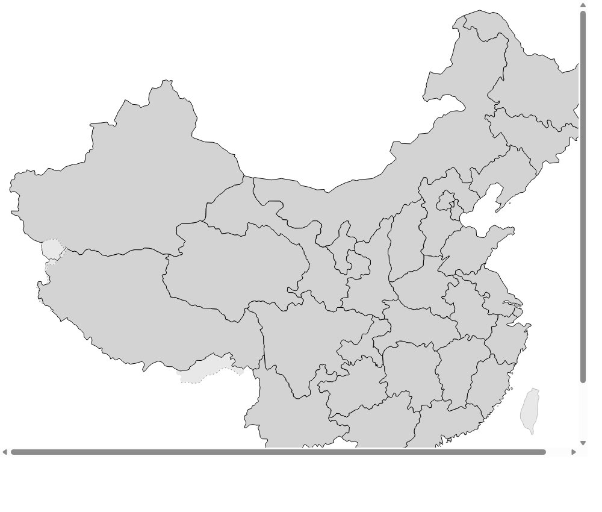

On-site Sequence
第一幕 · 正立面
先让轮廓建立秩序
先从正立面进入，抓住屋顶、檐口和殿身比例，这是阅读细节的起点。
先确认整体体量和站立方式，再进入构件和受力关系。
01 / 06
Browse Paths
继续往下看，可以换三种方法重新进入古建筑。

Regional Groups
把中国古建筑放回更大的地理板块里看。
从华北礼制、江南园林，到西南山地聚落和西北丝路遗存，每个区域都适合用不同的阅读方式进入。
Structure Families
按古建筑构造分类浏览，并直接跳转到对应省份详情页
点击每个分类下的建筑卡片，可直接进入详细展示页面。
Feature Families
按特色展示：点击分类卡片后可直接跳转到对应古建筑详细页面
覆盖礼制中轴、园林书院、民居聚落、山地空间、宗教塔寺与市井街区等特色分类。